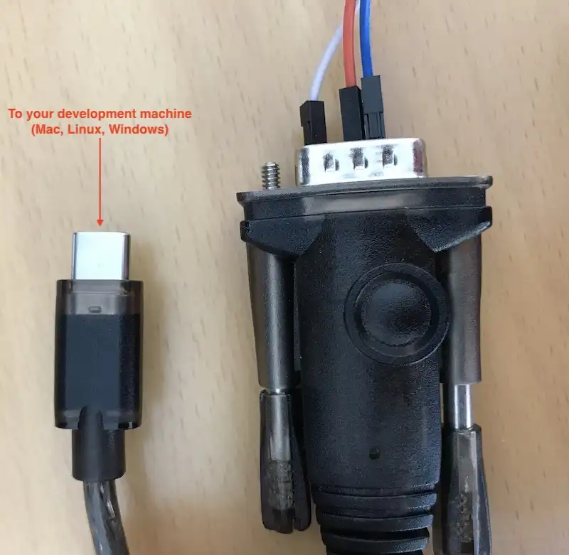
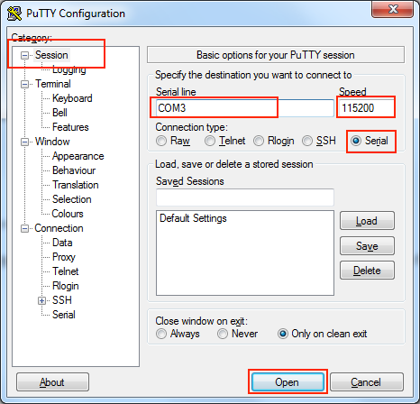

Yocto Linux Qt 6.3 OS¶
Yocto Linux Qt 6.3 OS on i.MX8MP User Manual
This is the software manual for i.MX8MP Chipsee industrial PC. If you’ve never developed on this hardware with a Yocto Linux Qt 6.3 OS, this manual can get you started quickly.
Supported Chipsee PCs: all Chipsee i.MX8MP based industrial PCs, including but not limited to:
PPC-A53-070 (PN: CS10600-IMX8MP-070P)
CS-A53-BOX (PN: CS-IMX8MP-BOX)
When you develop software on the Chipsee industrial PC, you can open the hardware manual beside this software manual, to aid you in wiring your devices.
In this manual, main topics are:
How to connect to the device from your workstation.
How to use the hardware resources such as RS232, RS485, CAN and GPIO, etc.
How to play, record an audio, how to play a video.
How to connect and set WiFi/Ethernet network; how to connect Bluetooth.
How to flash OS firmware.
System Information¶
Out of Box System
Description |
|
|---|---|
Kernel |
5.15.52 |
Bootloader |
2022.04-lf_v2022.04 |
OS |
aarch64 GNU/Linux |
GCC |
11.3.0 |
QT |
6.3 |
username/password |
root / no password |
Window Manager |
Wayland |
Desktop Environment |
Weston |
Prepare for Developing¶
To get started, you first need to power on the Chipsee industrial PC, then you may want to connect to this PC from your own laptop or computer to control it. Let’s prepare some hardware and software to start developing.
Prepare the Hardware¶
To power on and connect to Chipsee industrial PC, we need:
A power adapter. For products with a screen of 7 inch and below, a power adapter with 6V ~ 36V DC output is required; for 10.1 inch and above products, you need one with 12V ~ 36V. For example: a switching mode power supply (SMPS), a laptop power adapter (such as Dell or Intel NUC’s 19V adapter), a router’s power adapter (such as ASUS router’s 12V power adapter), etc.
A USB to serial cable (if you need serial debug).
An Ethernet cable (if you want to SSH into the Chipsee industrial PC). You may also use WiFi if your Chipsee industrial PC supports WiFi, in this case you don’t need the Ethernet cable.
Prepare the Software¶
Thanks to Linux OS, developing on Chipsee industrial PC isn’t really different from developing on any other PCs, you can use any developer software you’re comfortable with.
The software listed below are not mandatory, they’re recommendations because we find them easy to use:
To SSH into a Chipsee industrial PC, you may find PuTTY on Windows handy; for Linux and macOS users, a terminal app should come with your OS out of box, like Terminal/iTerm2 on macOS and xterm on Linux.
Connect to the Device¶
There are 2 ways to connect to the device from your workstation:
From Serial RS232 port
From Ethernet or Wi-Fi (SSH)
Let’s take a look at these connecting methods one by one.
Connect From Serial Port¶
[Cheatsheet for experienced developers: RS232_2, username is root, no password]
In our prebuilt Yocto Linux Qt 6.3 OS, the RS232_2 serves as a serial debug port on the i.MX8MP products. We can connect a RS232 cable from the Chipsee industrial PC to our workstation, allowing us to control the Chipsee industrial PC from our workstation.
To get started, you need a USB to serial cable, we will use a USB Type-C to DB-9 cable as an example, you can use a USB-A cable as well, you need to plug the USB end to your workstation, and the serial end to the Chipsee device.
I will plug the USB Type-C port to a Mac (Windows and Linux work fine too), and then I would use three female to female dupont wires, to connect 3 of the DB-9 pins to my Chipsee industrial PC ‘s GND and RS232_2 (RX and TX) pins.
Take a look at the image below, this is the 7-inch product, if your product has a different screen size, check out the hardware document to find out which pins are RS232_2 TX and RX, each hardware doc has a “RS232+RS485+xxx” section, you should be able to find which is the RS232_2 of that model in the image and table of that doc.
You should connect the DB-9’s RX to the device’s TX, and DB-9’s TX to the device’s RX, you should also connect their GNDs (the white wire).
Connect 3 Pins with Dupont Wires
Use a USB to Serial Cable to Connect the Chipsee Industrial PC with Your Workstation
Linux and MacOS¶
For MacOS and Linux users, you will need a program called screen. It should be already installed on most MacOS and Linux distributions(if the screen program is not installed on your computer, you can search how to install it, for example, “apt install screen” on Debian). Open your terminal and type screen -v. If the screen program is already installed in your computer, you should see a version number, like that in the image below:

Confirm You Have the Screen Program (MacOS & Linux)
Because the USB end of the cable is plugged into our workstation, we need to know which USB device it is in Linux/MacOS. We can find it out by testing:
ls /dev/tty*You might see many tty devices listed in your terminal, and cannot decide which is your USB to RS232 cable. Here is a tip: you can unplug the cable first, type the command to see what is listed in the OS. Then you plug it back in, and test again, to see what has recently appeared. The difference between the two should be your cable. In the image below, we found the /dev/tty.usbserial-10 is our USB to RS232 cable.

Find Out Which Device is Your USB to Serial Cable
You can put the device name you found to the screen program as an argument. To connect to the device (115200 is the default baud rate of the device):
screen /dev/tty.usbserial-10 115200
When the prompt asks you to login, type the user name root, it doesn’t have a password:
1imx8mp-eisd login: root 2root@imx8mp-eisd:~# ls / 3bin dev home lost+found mnt proc sbin sys unit_tests var 4boot etc lib media opt run srv tmp usr 5root@imx8mp-eisd:~#
If there is a blank/white screen, you can hit Enter or type some commands to see if you can interact with the device. In the image below, the device responds to my ls command.
The Screen Program Connects Your Workstation to the Industrial PC’s Android Console
If you want to exit the screen program, you can press Ctrl+A then press K.
The program will ask you if you want to kill this window, then press y to exit the program.
Press “Ctrl + A” Follow by a “K” to Exit the Program
Windows¶
For Windows users, you don’t need to install specific “driver” kind of thing for Windows to recognize a Chipsee PC, but before proceeding, you should see a COM port appear/disappear when plug/unplug your USB to serial cable in Windows. Most USB to serial cables don’t require driver installation on Windows10/11. But if you find your cable isn’t recognizable by Windows, try checking the cable’s manufacturer’s website to learn more about it. Most of the time, simply doing a Windows update should do the trick, Windows can detect the cable’s USB driver and install it for you.
You should install a program called PuTTY, here is a link to download the software: https://www.putty.org/. If you’re comfortable with other clients other than PuTTY, you can use those as well.
With PuTTY in your belt, let’s find out which COM port your USB to RS232 cable is using. One tip is to check the Microsoft Windows Device Manager (right click Windows icon, select Device Manager). Check which COM port appears/disappears when you plug/unplug the USB to serial cable. And that COM port device should be your USB to RS232 cable. Keep a note of the COM port your serial cable is using, let’s say it’s “your-com”, or “COM3” in this example.
COM3 is the USB to Serial Cable
Open the PuTTY program, select Session, choose Serial in the radio buttons, and fill the COM port(your-com, or COM3 in this example) you found in the Microsoft Windows Device Manager, and choose 115200 as baud rate, then click Open.
Input your-com in the Serial Line field, in our case COM3
Now you should be able to connect from your workstation to the device through the serial port. You can try to hit Enter, or type some commands, like ls, to see if the device replies to your commands. If the prompt asks you to login, type the user name root, it doesn’t have a password:
1imx8mp-eisd login: root
2root@imx8mp-eisd:~# ls /
3bin dev home lost+found mnt proc sbin sys unit_tests var
4boot etc lib media opt run srv tmp usr
5root@imx8mp-eisd:~#
Connect From Network (SSH)¶
[Cheatsheet for experienced developers: username: root, no password]
You can SSH to the device when it’s connected to the network, either through Wi-Fi or Ethernet.
First make sure you’re connected through WiFi or Ethernet (to learn how, jump to the Network section below. Ethernet can be automatically detected, WiFi needs some configuration).
Then you can check the IP address with ifconfig, to type this command, you can use a mouse and keyboard temporarily and type it, or through serial debug port:
1root@imx8mp-eisd:~# ifconfig
2eth0: flags=-28669<UP,BROADCAST,MULTICAST,DYNAMIC> mtu 1500
3 ether be:ec:6e:3a:f4:18 txqueuelen 1000 (Ethernet)
4 RX packets 0 bytes 0 (0.0 B)
5 RX errors 0 dropped 0 overruns 0 frame 0
6 TX packets 0 bytes 0 (0.0 B)
7 TX errors 0 dropped 0 overruns 0 carrier 0 collisions 0
8
9eth1: flags=-28669<UP,BROADCAST,MULTICAST,DYNAMIC> mtu 1500
10 ether be:ed:6e:3a:f4:18 txqueuelen 1000 (Ethernet)
11 RX packets 0 bytes 0 (0.0 B)
12 RX errors 0 dropped 0 overruns 0 frame 0
13 TX packets 0 bytes 0 (0.0 B)
14 TX errors 0 dropped 0 overruns 0 carrier 0 collisions 0
15 device interrupt 52
16
17wlan0: flags=-28605<UP,BROADCAST,RUNNING,MULTICAST,DYNAMIC> mtu 1500
18 inet 192.168.50.150 netmask 255.255.255.0 broadcast 192.168.50.255
19 ether 2c:c3:e6:41:46:b2 txqueuelen 1000 (Ethernet)
20 RX packets 244 bytes 57010 (55.6 KiB)
21 RX errors 0 dropped 3 overruns 0 frame 0
22 TX packets 54 bytes 9715 (9.4 KiB)
23 TX errors 0 dropped 0 overruns 0 carrier 0 collisions 0
The inet line contains your-ip. In the case above the IP address is 192.168.50.150 through wlan0.
If you’re using Ethernet, it should be one of eth0(line 2) and eth1(line 9), depending on your device model. For example, on the dual-lan 7 inch product, LAN0 port is eth0, LAN1 port is eth1.
Then we can ssh from our workstation with this IP address.
Linux / MacOS¶
For Linux and MacOS users, you can use your terminal and type:
ssh root@your-ip
# In our case, your-ip is 192.168.50.150
ssh root@192.168.50.150
The username is root, and there is no password.
SSH with your-ip
Windows¶
For Windows users using PuTTY, you can choose Session, input username@your-ip (in our case root@192.168.50.150, yours should be different) in the Host Name field. Port Number should remain 22, choose SSH as the connection type in the radio buttons, click “Open”. There is no password for root user.

Input username@your-ip in the Host Name field, in our case root@192.168.50.150
Now you have connected to the device through the network.
System Resources¶
SD Card¶
When an micro SD card (TF card) is inserted to the device, it will appear as mmcblk1, you can check it by lsblk, note the last line mmcblk1 179:96 0 58.2G 0 disk is the 64GB SD card:
1root@imx8mp-eisd:~# lsblk
2
3// Before insertion
4NAME MAJ:MIN RM SIZE RO TYPE MOUNTPOINTS
5mmcblk2 179:0 0 14.6G 0 disk
6|-mmcblk2p1 179:1 0 83.2M 0 part /run/media/mmcblk2p1
7`-mmcblk2p2 179:2 0 14.5G 0 part /
8mmcblk2boot0 179:32 0 4M 1 disk
9mmcblk2boot1 179:64 0 4M 1 disk
10
11// After insertion
12NAME MAJ:MIN RM SIZE RO TYPE MOUNTPOINTS
13mmcblk2 179:0 0 14.6G 0 disk
14|-mmcblk2p1 179:1 0 83.2M 0 part /run/media/mmcblk2p1
15`-mmcblk2p2 179:2 0 14.5G 0 part /
16mmcblk2boot0 179:32 0 4M 1 disk
17mmcblk2boot1 179:64 0 4M 1 disk
18mmcblk1 179:96 0 58.2G 0 disk
Or with fdisk -l, the 64GB TF card appears as “Disk /dev/mmcblk1: 58.22 GiB”:
1root@imx8mp-eisd:~# fdisk -l
2Disk /dev/mmcblk2: 14.56 GiB, 15634268160 bytes, 30535680 sectors
3Units: sectors of 1 * 512 = 512 bytes
4Sector size (logical/physical): 512 bytes / 512 bytes
5I/O size (minimum/optimal): 512 bytes / 512 bytes
6Disklabel type: dos
7Disk identifier: 0xeda0e0c7
8
9Device Boot Start End Sectors Size Id Type
10/dev/mmcblk2p1 16384 186775 170392 83.2M c W95 FAT32 (LBA)
11/dev/mmcblk2p2 196608 30535679 30339072 14.5G 83 Linux
12
13Disk /dev/mmcblk1: 58.22 GiB, 62511906816 bytes, 122093568 sectors
14Units: sectors of 1 * 512 = 512 bytes
15Sector size (logical/physical): 512 bytes / 512 bytes
16I/O size (minimum/optimal): 512 bytes / 512 bytes
You can mount the SD card to /run/media/sd1 with mount command:
1root@imx8mp-eisd:~# mkdir /run/media/sd1
2root@imx8mp-eisd:~# mount --source /dev/mmcblk1 --target /run/media/sd1
3root@imx8mp-eisd:~# lsblk
4NAME MAJ:MIN RM SIZE RO TYPE MOUNTPOINTS
5mmcblk2 179:0 0 14.6G 0 disk
6|-mmcblk2p1 179:1 0 83.2M 0 part /run/media/mmcblk2p1
7`-mmcblk2p2 179:2 0 14.5G 0 part /
8mmcblk2boot0 179:32 0 4M 1 disk
9mmcblk2boot1 179:64 0 4M 1 disk
10mmcblk1 179:96 0 58.2G 0 disk /run/media/sd1
To unmount the SD card, use umount command:
1root@imx8mp-eisd:~# cd /run/media/sd1/
2root@imx8mp-eisd:/run/media/sd1# umount /run/media/sd1/
3umount: /run/media/sd1/: target is busy.
4
5root@imx8mp-eisd:/run/media/sd1# cd /
6root@imx8mp-eisd:/# umount /run/media/sd1/
7
8root@imx8mp-eisd:/# lsblk
9NAME MAJ:MIN RM SIZE RO TYPE MOUNTPOINTS
10mmcblk2 179:0 0 14.6G 0 disk
11|-mmcblk2p1 179:1 0 83.2M 0 part /run/media/mmcblk2p1
12`-mmcblk2p2 179:2 0 14.5G 0 part /
13mmcblk2boot0 179:32 0 4M 1 disk
14mmcblk2boot1 179:64 0 4M 1 disk
15mmcblk1 179:96 0 58.2G 0 disk
Then you can eject the SD card physically.
USB Flash Drive¶
USB flash drive on the USB3.0 port or USB2.0 port will be automatically detected on /dev/sdX (X is the usually a/b, e.g. /dev/sda or /dev/sdb, depending on the order it is inserted), you can check it with lsblk:
1root@imx8mp-eisd:/# lsblk
2
3// Before insertion
4NAME MAJ:MIN RM SIZE RO TYPE MOUNTPOINTS
5mmcblk2 179:0 0 14.6G 0 disk
6|-mmcblk2p1 179:1 0 83.2M 0 part /run/media/mmcblk2p1
7`-mmcblk2p2 179:2 0 14.5G 0 part /
8mmcblk2boot0 179:32 0 4M 1 disk
9mmcblk2boot1 179:64 0 4M 1 disk
10
11// After insertion
12NAME MAJ:MIN RM SIZE RO TYPE MOUNTPOINTS
13sda 8:0 1 7.3G 0 disk
14|-sda1 8:1 1 3.6G 0 part
15|-sda2 8:2 1 4.1M 0 part /run/media/ESP-sda2
16|-sda3 8:3 1 300K 0 part
17`-sda4 8:4 1 3.7G 0 part /run/media/writable-sda4
18mmcblk2 179:0 0 14.6G 0 disk
19|-mmcblk2p1 179:1 0 83.2M 0 part /run/media/mmcblk2p1
20`-mmcblk2p2 179:2 0 14.5G 0 part /
21mmcblk2boot0 179:32 0 4M 1 disk
22mmcblk2boot1 179:64 0 4M 1 disk
In the example above, the USB drive is detected on /dev/sda, it has 4 partitions, two partitions are automatically mounted (sda2 and sda4).
With two USB flash drive plugged in to the device, they will be detected on /dev/sda and /dev/sdb:
1root@imx8mp-eisd:/# fdisk -l
2Disk /dev/mmcblk2: 14.56 GiB, 15634268160 bytes, 30535680 sectors
3Units: sectors of 1 * 512 = 512 bytes
4Sector size (logical/physical): 512 bytes / 512 bytes
5I/O size (minimum/optimal): 512 bytes / 512 bytes
6Disklabel type: dos
7Disk identifier: 0xeda0e0c7
8
9Device Boot Start End Sectors Size Id Type
10/dev/mmcblk2p1 16384 186775 170392 83.2M c W95 FAT32 (LBA)
11/dev/mmcblk2p2 196608 30535679 30339072 14.5G 83 Linux
12
13Disk /dev/sda: 7.26 GiB, 7794589696 bytes, 15223808 sectors
14Disk model: Cruzer Blade
15Units: sectors of 1 * 512 = 512 bytes
16Sector size (logical/physical): 512 bytes / 512 bytes
17I/O size (minimum/optimal): 512 bytes / 512 bytes
18Disklabel type: gpt
19Disk identifier: 9240A165-D190-4AB6-8A10-46DC207B42EE
20
21Device Start End Sectors Size Type
22/dev/sda1 64 7465119 7465056 3.6G Microsoft basic data
23/dev/sda2 7465120 7473615 8496 4.1M EFI System
24/dev/sda3 7473616 7474215 600 300K Microsoft basic data
25/dev/sda4 7475200 15223744 7748545 3.7G Linux filesystem
26
27Disk /dev/sdb: 28.65 GiB, 30765219840 bytes, 60088320 sectors
28Disk model: SanDisk 3.2Gen1
29Units: sectors of 1 * 512 = 512 bytes
30Sector size (logical/physical): 512 bytes / 512 bytes
31I/O size (minimum/optimal): 512 bytes / 512 bytes
32Disklabel type: dos
33Disk identifier: 0xcad4ebea
34
35Device Boot Start End Sectors Size Id Type
36/dev/sdb4 * 256 60088319 60088064 28.7G c W95 FAT32 (LBA)
Note that the “Disk /dev/sda: 7.26 GiB” is a 8GB usb flash drive and the “Disk /dev/sdb: 28.65 GiB” is a 32GB USB flash drive.
Backlight¶
We use one PWM to control the backlight of i.MX8MP boards, You can use the following commands:
- Get the supported max brightness:
cat /sys/class/backlight/backlight/max_brightness
- Get the current brightness:
cat /sys/class/backlight/backlight/actual_brightness
- Set brightness:
echo 50 > /sys/class/backlight/backlight/brightness
LED¶
There is a red LED beside PROG button, you can control the LED by writing a file:
1# Turn on the red LED
2root@imx8mp-eisd:/# echo 1 > /sys/class/leds/work/brightness
3root@imx8mp-eisd:/# cat /sys/class/leds/work/brightness
41
5
6# Turn off the red LED
7root@imx8mp-eisd:/# echo 0 > /sys/class/leds/work/brightness
8root@imx8mp-eisd:/# cat /sys/class/leds/work/brightness
90
You can use your programming language to control it as well. Simply use the file (IO) system library to write this /sys/class/leds/work/brightness file.
Buzzer¶
The Chipsee industrial PC has one buzzer. You can control it with gpiod as follows:
gpioset 2 22=1 # enable buzzer (be careful, it's really loud!)
gpioset 2 22=0 # disable buzzer
Serial Port¶
The i.MX8MP based Chipsee industrial PC supports RS232 and RS485, here are the mapping from the port name to the system tree device:
5 inch product
PPC-A53-050 (PN: CS12720-IMX8MP-050P)
Name |
Node |
Protocol |
|---|---|---|
RS232_0 |
/dev/ttymxc1 |
RS232, Serial Debug |
RS232_2 |
/dev/ttymxc3 |
RS232 |
RS485_3 |
/dev/ttymxc2 |
RS485 |
RS485_5 |
/dev/ttyUSB0 |
RS485 |
7 inch product and Box product
PPC-A53-070 (PN: CS10600-IMX8MP-070P)
CS-A53-BOX (PN: CS-IMX8MP-BOX)
Name |
Node |
Protocol |
|---|---|---|
RS232_0 |
/dev/ttymxc3 |
RS232 |
RS232_2 |
/dev/ttymxc1 |
RS232, Serial Debug |
RS485_3 |
/dev/ttymxc2 |
RS485 |
RS485_4 |
/dev/ttyUSB0 |
RS485 |
RS485_5 |
/dev/ttyUSB1 |
RS485 |
10.1+ inch products
PPC-A53-101 (PN: CS12800-IMX8MP-101P)
Name |
Node |
Protocol |
|---|---|---|
RS232_0 |
/dev/ttymxc3 |
RS232 |
RS232_2 |
/dev/ttymxc1 |
RS232, Serial Debug |
RS485_3 |
/dev/ttymxc2 |
RS485 |
RS485_4 |
/dev/ttyUSB0 |
RS485 |
The 120 Ohm match resistor is already mounted on the RS485 port. RS485 ports are half-duplex, the hardware can switch the Tx/Rx direction automatically. RS232 ports are full-duplex.
You can use the pre-installed HardwareTest program developed by Chipsee to test serial ports, for example, you’ve wired the serial cable on the RS232_0_RX, RS232_0_TX on the 7 inch product, then you can select “ttymxc3” in “COM”, click “SerialOpen”, then you can use your workstation or another Chipsee PC to communicate with this 7 inch product.
For example, you can use a program called COMTool which can be downloaded from Github on your workstation, or use any of your favorite serial port debug tools. Select the same baudrate and bits as in HardwareTest program, click SerialSend to send from Chipsee industrial PC, or send ASCII from your workstation and receive it on the Chipsee industrial PC.
Testing Serial Port in HardwareTest Program
GPIO¶
There are 8 GPIOs, 4 Output, and 4 Input, they are all optical isolated. You can control the output or input pin voltage by feeding the VDD_ISO voltage. The pin voltage should be from 5V to 24V. You should use an external reliable power supply for the VDD_ISO and GND_ISO.
We don’t recommend testing GPIO with the onboard +5V/GND (wiring the +5V to VDD_ISO and wiring GND to GND_ISO), in most cases we recommend using an external power source for VDD_ISO and GND_ISO.
For:
7 inch product and box product: PPC-A53-070 (PN: CS10600-IMX8MP-070P), CS-A53-BOX (PN: CS-IMX8MP-BOX)
10.1+ inch products: PPC-A53-101 (PN: CS12800-IMX8MP-101P)
Refer to the tables below for a detailed port definition:
Function |
CPU IO |
IO Num |
|---|---|---|
OUT1 |
GPIO1_IO08 |
8 |
OUT2 |
GPIO1_IO14 |
14 |
OUT3 |
GPIO1_IO13 |
13 |
OUT4 |
GPIO1_IO12 |
12 |
IN1 |
GPIO1_IO11 |
11 |
IN2 |
GPIO1_IO07 |
7 |
IN3 |
GPIO1_IO06 |
6 |
IN4 |
GPIO1_IO05 |
5 |
The GPIO1 is gpiochip0 in gpiod. To set GPIO out to high with gpiod:
1# Set OUT1 and OUT2 (GPIO1_IO08 and GPIO1_IO14) to High
2gpioset 0 8=1 14=1
3
4# Set OUT3 and OUT4 (GPIO1_IO13 and GPIO1_IO12) to Low
5gpioset 0 13=0 12=0
To get GPIO input:
# Get the IN4 (GPIO1_IO05) status:
gpioget 0 5
To detect GPIO event (rising edge and falling edge), e.g. on IN4:
1root@imx8mp-eisd:~# gpiomon 0 5
2// Give IN4 a high voltage:
3event: RISING EDGE offset: 5 timestamp: [ 1397.277364125]
4// Remove the IN4 external high voltage:
5event: FALLING EDGE offset: 5 timestamp: [ 1398.535609500]
6event: RISING EDGE offset: 5 timestamp: [ 1398.535796125]
7// Above are bounces
8event: FALLING EDGE offset: 5 timestamp: [ 1398.536035125]
You can also use a programming language like C, which has libgpiod support to control the GPIOs.
# Get the libgpiod dev packages(run the following commands on the Chipsee target ARM board):
wget -c https://chipsee-tmp.s3.amazonaws.com/SourcesArchives/HARDWARETEST/8MP/libgpiod.tar.gz
tar zxmvf libgpiod.tar.gz -C /
# Get the gpiotest.c file
# The gpiotest.c will setting OUT1 IO as one output pins and drive high/low in every 1 second
wget -c https://chipsee-tmp.s3.amazonaws.com/SourcesArchives/HARDWARETEST/8MP/gpiotest.c
# Compile and run it
gcc gpiotest.c -o gpiotest -lgpiod
./gpiotest
We can also cross-compile gpiotest.c on Ubuntu 20.04 or any other Linux X86_64 system and execute the gpiotest on the target Chipsee ARM board. In doing so, there’s no requirement to install the libgpiod development packages on the target Chipsee ARM board system. However, we do need to install the SDK and configure the environment accordingly. Refer to Development chapter to install SDK.
$ source /opt/fsl-imx-xwayland/5.15-kirkstone/environment-setup-armv8a-poky-linux
$ echo ${CC}
$ ${CC} gpiotest.c -o gpiotest -lgpiod
Then put the gpiotest to target Chipsee ARM board over ssh or other solutions you like.
$ scp gpiotest root@xxx.xxx.xxx.xxx
Controller Area Network (CAN)¶
To use CAN, you must add one 120Ω resistor between CAN_H and CAN_L on one of the two devices, as shown in the figure below.
Note
The Chipsee industrial PC doesn’t mount the 120Ω matched resistor on all CAN signals by default.

Figure 403: Connecting CAN¶
5 inch product
PPC-A53-050 (PN: CS12720-IMX8MP-050P)
Pin Name |
Software Node |
|---|---|
CAN1_H, CAN1_L |
CAN0 |
7 inch product and Box product
PPC-A53-070 (PN: CS10600-IMX8MP-070P)
CS-A53-BOX (PN: CS-IMX8MP-BOX)
Pin Name |
Software Node |
|---|---|
CAN0_H, CAN0_L |
CAN0 |
CAN1_H, CAN1_L |
CAN1 |
10.1+ inch products
PPC-A53-101 (PN: CS12800-IMX8MP-101P)
Pin Name |
Software Node |
|---|---|
CAN0_H, CAN0_L |
CAN0 |
CAN1_H, CAN1_L |
CAN1 |
To check the CAN devices status with ip link, on the 7 inch device, there are two CAN devices (can0 and can1):
root@imx8mp-eisd:~# ip link
1: lo: <LOOPBACK,UP,LOWER_UP> mtu 65536 qdisc noqueue state UNKNOWN mode DEFAULT group default qlen 1000
link/loopback 00:00:00:00:00:00 brd 00:00:00:00:00:00
2: eth0: <NO-CARRIER,BROADCAST,MULTICAST,UP> mtu 1500 qdisc mq state DOWN mode DEFAULT group default qlen 1000
link/ether be:ec:6e:3a:f4:18 brd ff:ff:ff:ff:ff:ff
3: eth1: <NO-CARRIER,BROADCAST,MULTICAST,UP> mtu 1500 qdisc mq state DOWN mode DEFAULT group default qlen 1000
link/ether be:ed:6e:3a:f4:18 brd ff:ff:ff:ff:ff:ff
4: can0: <NOARP,ECHO> mtu 16 qdisc noop state DOWN mode DEFAULT group default qlen 10
link/can
5: can1: <NOARP,ECHO> mtu 16 qdisc noop state DOWN mode DEFAULT group default qlen 10
link/can
6: wlan0: <BROADCAST,MULTICAST,DYNAMIC,UP,LOWER_UP> mtu 1500 qdisc mq state UP mode DORMANT group default qlen 1000
link/ether 2c:c3:e6:41:46:b2 brd ff:ff:ff:ff:ff:ff
7: wwan0: <BROADCAST,MULTICAST,NOARP> mtu 1500 qdisc noop state DOWN mode DEFAULT group default qlen 1000
link/ether 8e:85:1a:07:2b:5e brd ff:ff:ff:ff:ff:ff
Here are a few examples to test CAN using CAN utils.
Set the bit-rate to 50Kbits/sec with triple sampling using the following command (use ROOT user):
ip link set can0 down
ip link set can0 type can bitrate 50000 triple-sampling on
Bring up the device using the command:
ip link set can0 up
Transfer packets
cansend can0 5A1#11.2233.44556677.88
Receive data from CAN bus
candump can0
Bring down the device
ip link set can0 down
If you’re new to CAN, you can use two Chipsee devices to test with each other. On both device_A and device_B you first set the CAN and bring up the CAN. Then on device_A you use candump to listen, on device_B you use cansend to send a message, at this moment, device_A should receive the message sent from device_B and show it in the terminal. For example:
// On device_A
root@imx8mp-eisd:~# candump can0
// On device_B
root@imx8mp-eisd:~# cansend can1 5A1#11.2233.44556677.88
root@imx8mp-eisd:~# cansend can1 1F334455#1122334455667788
// On device_A it shows
can0 5A1 [8] 11 22 33 44 55 66 77 88
can0 1F334455 [8] 11 22 33 44 55 66 77 88
Bluetooth¶
First check if Bluetooth is enabled:
root@imx8mp-eisd:~# connmanctl technologies
/net/connman/technology/bluetooth
Name = Bluetooth
Type = bluetooth
Powered = False
Connected = False
Tethering = False
TetheringFreq = 2412
If not you can power on Bluetooth with connmanctl:
root@imx8mp-eisd:~# connmanctl enable bluetooth
Enabled bluetooth
root@imx8mp-eisd:~# connmanctl technologies
/net/connman/technology/bluetooth
Name = Bluetooth
Type = bluetooth
Powered = True
Connected = False
Tethering = False
TetheringFreq = 2412
Use bluetoothctl to control Bluetooth. Remember to change the “8C:D9:D6:62:79:FC” MAC address in the example to your phone’s MAC address.
root@imx8mp-eisd:~# bluetoothctl // enter bluetoothctl
[bluetooth] power on
[bluetooth] agent on
[bluetooth] default-agent
[bluetooth] discoverable on
[bluetooth] pairable on
[bluetooth] scan on // Scan other BT devices
[bluetooth] pair 8C:D9:D6:62:79:FC // Pair with the device, confirm on your phone
// You may need to type "yes" to confirm
[bluetooth] trust 8C:D9:D6:62:79:FC // Trust the device
[bluetooth] connect 8C:D9:D6:62:79:FC // Connect the device
[bluetooth] remove 8C:D9:D6:62:79:FC // Remove the device
When your phone is connected to the device, you can play a music on your phone, and the device’s speaker will play the music. You can use other devices to connect to Bluetooth and use other software to achieve other purposes as well.
GPS¶
If your product shipped with a GPS module, and a GPS antenna, you can enable the GPS function.
You can check the Chipsee hardware test program, click GPS Enable button, you should see some random code(GPS information) in the text box.
Click GPS Enable Button in Hardware Test
You can also use GPS from command line.
Test the GPS function as follows, first, you listen to the GPS info serial port (/dev/ttyUSB5), then, you send AT commands to AT serial port (/dev/ttyUSB6). Finally, GPS information should appear on the info port. This means you will need two terminals opened, one for listening and the other for sending.
GPS Port: /dev/ttyUSB5
AT port: /dev/ttyUSB6
In the first terminal, we use cat to listen for GPS info:
cat /dev/ttyUSB5
# hit Enter, the port will keep listening
# until any information comes to the port(after you send AT command to AT port)
In the second terminal, we send AT commands with microcom, you can also use other programs to send serial commands:
microcom /dev/ttyUSB6 -s 9600
ATE1 # Enable displaying. Hit Enter after you type ATE1
ATI # Print product info
AT+CSQ # Query Signal Level, return [+CSQ: current signal strength, channel bit error rate] e.g.: +CSQ: 19,99 means strength 19 with rate 99
AT+QGPSCFG="gpsnmeatype",31 # Turn on all output type, GGA/RMC/GSV/GSA/VTG, this setting will be saved to NVRAM, persists after reboot
AT+QGPS=1 # enable GPS, wait some minutes, you can get data from terminal.
AT+QGPSEND # disable GPS
Left: /dev/ttyUSB5 GPS Port, Right: /dev/ttyUSB6 AT Port
Audio¶
Audio Card in OS¶
We will use aplay and arecord to play or record audio, but first we need to check which audio card we need to use.
The audio card in the device is imx8mpnau8822, first check it with alist -l (lower case “l”):
1root@imx8mp-eisd:~# aplay -l
2 **** List of PLAYBACK Hardware Devices ****
3card 0: audiohdmi [audio-hdmi], device 0: i.MX HDMI i2s-hifi-0 [i.MX HDMI i2s-hifi-0]
4 Subdevices: 1/1
5 Subdevice #0: subdevice #0
6card 1: btscoaudio [bt-sco-audio], device 0: 30c20000.sai-bt-sco-pcm-wb bt-sco-pcm-wb-0 [30c20000.sai-bt-sco-pcm-wb bt-sco-pcm-wb-0]
7 Subdevices: 1/1
8 Subdevice #0: subdevice #0
9card 2: imx8mpnau8822 [imx8mp-nau8822], device 0: 30c30000.sai-nau8822-hifi nau8822-hifi-0 [30c30000.sai-nau8822-hifi nau8822-hifi-0]
10 Subdevices: 1/1
11 Subdevice #0: subdevice #0
In the example, card 2:imx8mpnau8822 is our audio card. We will need its Subdevice #0. It means we need to select card 2 hardware’s subdevice 0. It is hw:2,0 in aplay or arecord.
But the order of these audio cards can change after each boot, so we’d better use its audio card name instead of its order.
We can check with aplay -L (upper case “L”):
1 root@imx8mp-eisd:~# aplay -L
2 null
3 Discard all samples (playback) or generate zero samples (capture)
4 pulse
5 PulseAudio Sound Server
6 sysdefault:CARD=btscoaudio
7 bt-sco-audio, 30c20000.sai-bt-sco-pcm-wb bt-sco-pcm-wb-0
8 Default Audio Device
9 sysdefault:CARD=imx8mpnau8822
10 imx8mp-nau8822, 30c30000.sai-nau8822-hifi nau8822-hifi-0
11 Default Audio Device
12 sysdefault:CARD=audiohdmi
13 audio-hdmi, i.MX HDMI i2s-hifi-0
14 Default Audio Device
The audio card is sysdefault:CARD=imx8mpnau8822 in this case.
Audio Playing¶
By default the device plays audio from its integrated speaker. To play an audio file:
# name based
aplay -D sysdefault:CARD=imx8mpnau8822 /usr/hardwaretest/WavTest.wav
# order based
aplay -D hw:2,0 /usr/hardwaretest/WavTest.wav
If a headphone is plugged into the audio jack, it will play audio from the headphone instead of its speaker.
To set the volume:
# Set volume to 50% (0~100%)
pactl set-sink-volume @DEFAULT_SINK@ 50%
It will set volume for both speaker and headphone, and persists after reboot.
To set the volume up or down a little bit:
1root@imx8mp-eisd:/# pactl get-sink-volume @DEFAULT_SINK@
2Volume: front-left: 65536 / 100% / 0.00 dB, front-right: 65536 / 100% / 0.00 dB
3 balance 0.00
4root@imx8mp-eisd:/# pactl set-sink-volume @DEFAULT_SINK@ -17%
5root@imx8mp-eisd:/# pactl set-sink-volume @DEFAULT_SINK@ -17%
6root@imx8mp-eisd:/# pactl get-sink-volume @DEFAULT_SINK@
7Volume: front-left: 43252 / 66% / -10.83 dB, front-right: 43252 / 66% / -10.83 dB
8 balance 0.00
9root@imx8mp-eisd:/# pactl set-sink-volume @DEFAULT_SINK@ +47%
10root@imx8mp-eisd:/# pactl get-sink-volume @DEFAULT_SINK@
11Volume: front-left: 74053 / 113% / 3.18 dB, front-right: 74053 / 113% / 3.18 dB
12 balance 0.00
13root@imx8mp-eisd:/#
Audio Recording¶
To record an audio, you need an external microphone, such as a headphone which integrates a mic with 3.5mm audio jack. Or just a mic. The device doesn’t have a microphone on the board.
We will need to use arecord to record an audio.
As described in the previous section (Audio Card in OS), first we need to specify the CAPTURE hardware devices, it can be either a name based or an order based audio card, for example, I’ve plugged in a USB Blue Yeti microphone, and the list looks like this:
1root@imx8mp-eisd:~# arecord -L
2null
3 Discard all samples (playback) or generate zero samples (capture)
4pulse
5 PulseAudio Sound Server
6sysdefault:CARD=btscoaudio
7 bt-sco-audio, 30c20000.sai-bt-sco-pcm-wb bt-sco-pcm-wb-0
8 Default Audio Device
9sysdefault:CARD=imx8mpnau8822
10 imx8mp-nau8822, 30c30000.sai-nau8822-hifi nau8822-hifi-0
11 Default Audio Device
12sysdefault:CARD=Microphone
13 Yeti Stereo Microphone, USB Audio
14 Default Audio Device
15front:CARD=Microphone,DEV=0
16 Yeti Stereo Microphone, USB Audio
17 Front output / input
18root@imx8mp-eisd:~# arecord -l
19**** List of CAPTURE Hardware Devices ****
20card 0: btscoaudio [bt-sco-audio], device 0: 30c20000.sai-bt-sco-pcm-wb bt-sco-pcm-wb-0 [30c20000.sai-bt-sco-pcm-wb bt-sco-pcm-wb-0]
21 Subdevices: 1/1
22 Subdevice #0: subdevice #0
23card 1: imx8mpnau8822 [imx8mp-nau8822], device 0: 30c30000.sai-nau8822-hifi nau8822-hifi-0 [30c30000.sai-nau8822-hifi nau8822-hifi-0]
24 Subdevices: 1/1
25 Subdevice #0: subdevice #0
26card 3: Microphone [Yeti Stereo Microphone], device 0: USB Audio [USB Audio]
27 Subdevices: 1/1
28 Subdevice #0: subdevice #0
The Yeti microphone can be named after sysdefault:CARD=Microphone or hw:3,0
# You can learn more about the options of arecord with
arecord -h
# specify capture device by name
arecord -D sysdefault:CARD=Microphone -V stereo -c 2 -f S16_LE -r 48000 -t wav mic.wav
# specify capture device by order
arecord -D hw:1,0 -V mono -c 1 -f S16_LE -r 48000 -t wav mic.wav
# to play the audio you just recorded
aplay -D sysdefault:CARD=imx8mpnau8822 mic.wav
# If you need to post process mono to stereo, you can use sox
sox mic.wav -c 2 mic_stereo.wav
Now you should be able to record an audio with your capture device.
Video¶
To play a video:
# gst-play-1.0 path-to-your-video-file
# volume is from 0.0~1.0, 0.0 is silent, 1.0 is unchanged
gst-play-1.0 /usr/hardwaretest/h264.mp4 --volume=0.5
Network¶
WiFi(Command Line)¶
This operating system uses connmanctl to set WiFi.
Enabling and disabling WiFi
To check if WiFi is enabled you can run connmanctl technologies and check for the line that says Powered: True/False.
To power the WiFi on you can run connmanctl enable wifi or if you need to disable it you can run connmanctl disable wifi.
1root@imx8mp-eisd:~# connmanctl technologies 2/net/connman/technology/p2p 3 Name = P2P 4 Type = p2p 5 Powered = False 6 Connected = False 7 Tethering = False 8 TetheringFreq = 2412 9/net/connman/technology/ethernet 10 Name = Wired 11 Type = ethernet 12 Powered = True 13 Connected = False 14 Tethering = False 15 TetheringFreq = 2412 16/net/connman/technology/bluetooth 17 Name = Bluetooth 18 Type = bluetooth 19 Powered = False 20 Connected = False 21 Tethering = False 22 TetheringFreq = 2412 23/net/connman/technology/wifi 24 Name = WiFi 25 Type = wifi 26 Powered = True 27 Connected = True 28 Tethering = False 29 TetheringFreq = 2412
Connecting to an open access point
To scan for nearby Wi-Fi networks: connmanctl scan wifi.
To list the available networks found after a scan run (example output):
root@imx8mp-eisd:~# connmanctl services *AR Wired ethernet_beec6e3af418_cable *A chipsee wifi_2cc3e64146b2_6a686f6d652d3032_managed_psk chipsee-5G wifi_2cc3e64146b2_6a686f6d652d30325f3547_managed_psk 13301 wifi_2cc3e64146b2_333031_managed_psk too wifi_2cc3e64146b2_7463746f6f6f_managed_pskTo connect to an open network, use the second field beginning with wifi_ (tip: network names can be tab-completed.):
connmanctl connect wifi_2cc3e64146b2_6a686f6d652d30325f3547_managed_psk
You should now be connected to the network. Check using connmanctl state or ip addr.
Connecting to a protected access point
For protected access points you will need to provide some information to the ConnMan daemon, at the very least a password or a passphrase.
The commands in this section show how to run connmanctl in interactive mode, it is required for running the agent command. To start interactive mode simply type:
$ connmanctlYou then proceed almost as above, first scan for any Wi-Fi technologies:
connmanctl> scan wifi
To list services:
connmanctl> servicesNow you need to register the agent to handle user requests. The command is:
connmanctl> agent on
You now need to connect to one of the protected services. To do this easily, just use tab completion for the wifi service. If you were connecting to Chipsee-5G in the example above you would type:
connmanctl> connect wifi_2cc3e64146b2_6a686f6d652d30325f3547_managed_psk
The agent will then ask you to provide any information the daemon needs to complete the connection. The information requested will vary depending on the type of network you are connecting to. The agent will also print additional data about the information it needs as shown in the example below.
Agent RequestInput wifi_2cc3e64146b2_6a686f6d652d30325f3547_managed_psk Passphrase = [ Type=psk, Requirement=mandatory ] Passphrase?
Provide the information requested, in this example the passphrase:
To enable autoconnect after reboot:
config wifi_2cc3e64146b2_6a686f6d652d30325f3547_managed_psk autoconnect on
And then type:
connmanctl> quitIf the information you provided is correct you should now be connected to the protected access point.
You can check the status with:
connmanctl services wifi_2cc3e64146b2_6a686f6d652d30325f3547_managed_psk
It should give you:
root@imx8mp-eisd:~# connmanctl services wifi_2cc3e64146b2_6a686f6d652d30325f3547_managed_psk /net/connman/service/wifi_2cc3e64146b2_6a686f6d652d30325f3547_managed_psk Type = wifi Security = [ psk, wps ] State = ready Strength = 48 Favorite = True Immutable = False AutoConnect = True Name = chipsee-5G Ethernet = [ Method=auto, Interface=wlan0, Address=2C:C3:E6:41:46:B2, MTU=1500 ] IPv4 = [ Method=dhcp, Address=192.168.50.133, Netmask=255.255.255.0 ] IPv4.Configuration = [ Method=dhcp ] IPv6 = [ Method=auto, Address=fd35:e01d:6481:2645:2ec3:e6ff:fe41:46b2, PrefixLength=64, Privacy=disabled ] IPv6.Configuration = [ Method=auto, Privacy=disabled ] Nameservers = [ 8.8.8.8 192.168.50.1 ] Nameservers.Configuration = [ ] Timeservers = [ ] Timeservers.Configuration = [ ] Domains = [ ] Domains.Configuration = [ ] Proxy = [ Method=direct ] Proxy.Configuration = [ ] mDNS = False mDNS.Configuration = False Provider = [ ]
You should also be able to find a text config file of this WiFi’s settings:
root@imx8mp-eisd:~# cat /var/lib/connman/wifi_2cc3e64146b2_6a686f6d652d30325f3547_managed_psk/settings [wifi_2cc3e64146b2_6a686f6d652d30325f3547_managed_psk] Name=chipsee-5G SSID=6a686f6d652d30325f3547 Frequency=5785 Favorite=true AutoConnect=true Modified=2024-03-05T08:51:16Z Passphrase=password IPv4.method=dhcp IPv4.DHCP.LastAddress=192.168.50.133 IPv6.method=auto IPv6.privacy=disabled
WiFi(GUI)¶
There is a “Hardware Test” Qt program (source code: https://github.com/Chipsee/hardwaretest) developed by Chipsee pre-installed on the device, you can use the Connmanctl GUI to set WiFi in this program. Click the icon (arrow 1) to open the program, in the program GUI, click the button (arrow 2) to open connman setting.
The Hardware Test Program: Click 1 to Open the Program, Click 2 to Open Connman Setting
In the Connman System Tray, you can toggle the WiFi/Ethernet/Bluetooth on / off by clicking a checkbox, or clicking the “Powered” column.
Switching On Off the Connections
Select the Wireless tab. Click the SSID you want to connect, then click connect, input your password to connect.
Connect to an Access Point
Now you should be connected to the SSID. The system will remember the option and try to auto connect when boot up next time.
Wired Ethernet¶
After plugging in the network cable, wired Ethernet should be connected automatically.
Setting Static IP¶
To set a static IP address with connmanctl, you can use the following command:
connmanctl config <service> --ipv4 manual <ip address> <netmask> <gateway>
connmanctl config <service> --nameservers <dns-addr>
For example:
connmanctl config wifi_2cc3e64146b2_6a686f6d652d30325f3547_managed_psk --ipv4 manual 192.168.50.151 255.255.255.0 192.168.50.1
connmanctl config wifi_2cc3e64146b2_6a686f6d652d30325f3547_managed_psk --nameservers 8.8.8.8 4.4.4.4
The configuration will be saved in /var/lib/connman/wifi_2cc3e64146b2_6a686f6d652d30325f3547_managed_psk/settings.
root@imx8mp-eisd:~# cat /var/lib/connman/wifi_2cc3e64146b2_6a686f6d652d30325f3547_managed_psk/settings
[wifi_2cc3e64146b2_6a686f6d652d30325f3547_managed_psk]
Name=chipsee-5G
SSID=6a686f6d652d30325f3547
Frequency=5785
Favorite=true
AutoConnect=true
Modified=2024-03-05T08:51:16Z
Passphrase=password
IPv4.method=manual
IPv4.netmask_prefixlen=24
IPv4.local_address=192.168.50.151
IPv4.gateway=192.168.50.1
IPv6.method=auto
IPv6.privacy=disabled
Nameservers=8.8.8.8;4.4.4.4;
To set the manual IP mode back to DHCP:
connmanctl config wifi_2cc3e64146b2_6a686f6d652d30325f3547_managed_psk --ipv4 dhcp
4G/LTE¶
For products shipped with a 4G/LTE module, you can use Chipsee hardwaretest program and the quectel-CM tool to configure 4G/LTE network.
Note
SIM card does not support hot plug, power off before inserting/removing SIM card.
In the Chipsee hardware test program, there is a 4G Enable button, you can test the 4G function with this first. Then you can click “Netinfo” button, or “Refresh” button to check the 4G/LTE status.
To connect with an APN, there are 3 pre-configured APN profiles, 3gnet/ctnet/cmnet, and a “custom” that you can configure yourself.
4G/LTE Hardware Test Program
The Yocto Linux system pre-installed quectel-CM command, check available commands of quectel-CM and help:
quectel-CM --help
To connect to an APN, e.g.: ctnet
quectel-CM -s ctnet
The program should acquire an IP address from your carrier automatically.
Connecting 4G/LTE Through Command Line
You can then ping an IP address to check you’re connected, such as ping the Cloudflare DNS:
Ping an IP to Test Connectivity
Next, you’ll need to configure the DNS server for resolving DNS queries. Since the system employs ConnMan to handle network management, the DNS service is managed by ConnMan as well. However, this setup conflicts with systemd-resolved.service. When quectel-CM is utilized, it utilizes systemd-resolved.service to offer DNS resolution. Therefore, we need to switch the default DNS service to systemd-resolved.service.
ln -sf /etc/resolv-conf.systemd /etc/resolv.conf
Additionally, you may notice that upon using quectel-CM to establish a 4G connection, the functionality of WiFi, Bluetooth, and Ethernet ceases due to a conflict between the connman.service and systemd-resolved.service. Consequently, the connman.service becomes inactive while the systemd-resolved.service becomes active. Disabling the 4G connection restores the functionality of the connman.service.
ln -sf /etc/resolv-conf.connman /etc/resolv.conf
systemctl stop systemd-resolved.service
systemctl start connman.service
Development¶
In this chapter, you will learn how to set up a QT development environment, and develop the first QT application on the Chipsee industrial panel PCs.
Host system requirements¶
Ubuntu 20.04 LTS 64bit system should be installed on the host machine(your workstation).
Qtcreator 10.0.2 is a tested Qtcreator version, other versions should also be ok.
Preparation¶
Download Qtcreator 10.0.2 and install it on the Ubuntu 20.04 64bit Host PC. Other Qtcreator versions should also be ok.
$ wget -c https://download.qt.io/archive/qtcreator/10.0/10.0.2/qt-creator-opensource-linux-x86_64-10.0.2.run $ chmod a+x qt-creator-opensource-linux-x86_64-10.0.2.run $ ./qt-creator-opensource-linux-x86_64-10.0.2.run
The default install directory is /home/$USER/qtcreator-10.0.2.
You can install it in this directory or use another directory.
Install Chipsee SDK for IMX8MP products. Download the SDK and install it with the following commands (on your workstation - Ubuntu 20.04 64bit Host PC):
$ wget -c https://chipsee-tmp.s3.amazonaws.com/SDK/fsl-imx-xwayland-glibc-x86_64-meta-toolchain-qt6-armv8a-imx8mp-eisd-toolchain-5.15-kirkstone.sh.xz $ xz -d fsl-imx-xwayland-glibc-x86_64-meta-toolchain-qt6-armv8a-imx8mp-eisd-toolchain-5.15-kirkstone.sh.xz $ chmod +x fsl-imx-xwayland-glibc-x86_64-meta-toolchain-qt6-armv8a-imx8mp-eisd-toolchain-5.15-kirkstone.sh $ ./fsl-imx-xwayland-glibc-x86_64-meta-toolchain-qt6-armv8a-imx8mp-eisd-toolchain-5.15-kirkstone.sh
The default install directory is /opt/fsl-imx-xwayland/5.15-kirkstone/.
You can install it in this directory or you also can use another directory.
Use the following command to test SDK:
$ source /opt/fsl-imx-xwayland/5.15-kirkstone/environment-setup-armv8a-poky-linux $ echo ${CC} $ qmake -v
Such as:
Setting SDK Environment
Refer to the following image to open the Qt Creator.
Qt Creator
Open the QtCreator, then click the menu Edit->Preferences. Config the Compilers/Debuggers/Qt Versions/Devices/Kits as shown in the images below.
Compilers -gcc

Compilers -g++
Debuggers

Devices_1
Devices_2
Devices_3
Devices_4
Devices_5
Devices_6
Qt Versions
Kits

{kind=link}
{kind=link}
{kind=link}
{kind=link}
{kind=link}
{kind=link}
{kind=link}
{kind=link}
{kind=link}
{kind=link}
{kind=link}
{kind=link}
{kind=link}
{kind=link}
{kind=link}
{kind=link}
{kind=link}
{kind=link}
{kind=link}
{kind=link}
{kind=link}
{kind=link}
{kind=link}
{kind=link}
{kind=link}
{kind=link}
{kind=link}
{kind=link}
Example — Develop a HelloWorld Program¶
Use QtCreator to create a new Qt Widgets Application, named
HelloWorld, as shown in the image below.Qt Widgets Application
Use qmake to build the application.
qmake to build Qt
Set the Class Name, as shown in the image below.
Class Name
Select 8MP_QT6.3.2 kits, as shown in the image below.
Kit Selection
Press finish to complete the Qt project, as shown in the image below.
Finish project setup
Double click the helloworld.ui file to add one label widget, as shown in the image below.
Double click ui file
Add Label Widget
Click the Build and Run icon to build and run the app, as shown in the image below.
Build and Run App
The binary file will be copied to /opt/HelloWorld/bin/HelloWorld on the target Chipsee ARM board, it can be changed in the .pro file.
Binary Path
You also can run the HelloWorld manually on the target Chipsee ARM board.
/opt/HelloWorld/bin/HelloWorld
{kind=link}
{kind=link}
{kind=link}
{kind=link}
{kind=link}
{kind=link}
{kind=link}
{kind=link}
{kind=link}
Now you should be able to create, build and execute a Qt program on the Chipsee industrial panel PC.
Flashing OS¶
If you accidentally “bricked” the operating system, you can reinstall the OS of the device.
To reinstall the OS, you will need to prepare a TF card (micro SD card) to copy the OS firmware on the card. Then plug it into the device to flash the OS to the eMMC (the device’s internal storage).
Prepare For Flashing¶
You need to prepare the following:
16GB or larger micro SD card (TF card).
SD card reader (to be used on your HOST PC).
A (X86 or X86_64) Linux Host PC or virtual machine to make a bootable SD card.
Chipsee prebuilt image, all IMX8MP models share the same prebuilt OS image file.
Copy Firmware to SD Card¶
Plug in the SD card to your X86 Linux host PC (or virtual machine), then check which sdX device is your SD card:
1root@pve:~# lsblk 2NAME MAJ:MIN RM SIZE RO TYPE MOUNTPOINTS 3sda 8:0 1 14.9G 0 disk 4├─sda1 8:1 1 200M 0 part 5└─sda2 8:2 1 14.7G 0 part 6zd0 230:0 0 333M 0 disk 7├─zd0p1 230:1 0 32M 0 part 8└─zd0p2 230:2 0 300M 0 part 9nvme0n1 259:0 0 57.6G 0 disk 10├─nvme0n1p1 259:1 0 1007K 0 part 11├─nvme0n1p2 259:2 0 512M 0 part 12└─nvme0n1p3 259:3 0 57.1G 0 part
In the example above my SD card is /dev/sda, yours might be different.
Then extract the firmware you have downloaded from Chipsee to your Linux HOST PC (not into the SD card):
1root@pve:~# ls 2prebuilt-imx8mp-linuxqt63-emmc-20231030.tar.gz 3 4root@pve:~# tar zxvf prebuilt-imx8mp-linuxqt63-emmc-20231030.tar.gz 5root@pve:~# cd prebuilt-imx8mp-linuxqt63-emmc-20231030/ 6 7root@pve:~/prebuilt-imx8mp-linuxqt63-emmc-20231030# ls 8boot emmc-flash filesystem mksdcard.sh README
Generate OS image to the SD card.
Note
For different screen sizes of Chipsee IMX8MP products, you need to specify your display resolution in the next command. Here is a quick look up table:
7 Inch: 1024600
In the next command, you need to change “your-display-resolution” to the actual resolution of your device, for example, for 7 inch device, the command should be ‘./mksdcard.sh –device /dev/sda –display 1024600’.
# Remember to change /dev/sdX to your actual sdX # Remember to change your-display-resolution to your actual resolution ./mksdcard.sh --device /dev/sdX --display your-display-resolution
You should see something like this.

Successfully Flashed an SD Card to be Used Later
Flashing OS to eMMC¶
Plug in the SD card to the Chipsee IMX8MP device. We will flash the OS to the eMMC (device’s internal storage).
Poweroff the device (unplug the power supply).
Insert the SD card to the card slot of the device (refer to hardware manual’s picture for TF card insertion direction).
Push and hold the PROG button, in the meantime, power on the device, after around 10 seconds, you should see the system start to flash the OS automatically, then you can release the PROG button.
When the red LED stops blinking, and turns solid red, it means OS flashing is finished. You can also see a success message on the screen.
Now you can reboot the device, don’t push the PROG button, the system should boot from eMMC automatically.
Don’t forget to eject your SD card when everything works smoothly. (You might need to use a small-sized flathead screwdriver to aid ejecting SD card for enclosed panel PCs.)
{kind=link}
Successfully Flashed OS to eMMC
Now your brand new OS is flashed successfully.
FAQ¶
How to use eglfs on Yocto Linux XWayland?
systemctl stop weston export QT_QPA_EGLFS_KMS_CONFIG=/etc/eglfs.json export QT_QPA_PLATFORM=eglfs export QT_QPA_EGLFS_INTEGRATION=eglfs_viv export QT_QPA_EGLFS_ALWAYS_SET_MODE=1
# eglfs.json file content for PPC-A55-070 (7 inch 1024x600 resolution): { "device": "/dev/dri/card1", "outputs":[ {"name": "DSI1","mode":"1024x600"} ] }How to set timezone?
timedatectl set-timezone Asia/Shanghai hwclock -w # OR ln -sf /usr/share/zoneinfo/Asia/Shanghai /etc/localtime
The Hardware Test program does not open after I connect an external display?
Remove this hardware test configuration file: ~/.config/Chipsee/hardwaretest.conf, and test again.
Disclaimer¶
This document is provided strictly for informational purposes. Its contents are subject to change without notice. Chipsee assumes no responsibility for any errors that may occur in this document. Furthermore, Chipsee reserves the right to alter the hardware, software, and/or specifications set forth herein at any time without prior notice and undertakes no obligation to update the information contained in this document.
While every effort has been made to ensure the accuracy of the information contained herein, this document is not guaranteed to be error-free. Further, it does not offer any warranties or conditions, whether expressed orally or implied in law, including implied warranties and conditions of merchantability or fitness for a particular purpose. We specifically disclaim any liability with respect to this document, and no contractual obligations are formed either directly or indirectly by this document.
Despite our best efforts to maintain the accuracy of the information in this document, we assume no responsibility for errors or omissions, nor for damages resulting from the use of the information herein. Please note that Chipsee products are not authorized for use as critical components in life support devices or systems.
Technical Support¶
If you encounter any difficulties or have questions related to this document, we encourage you to refer to our other documentation for potential solutions. If you cannot find the solution you’re looking for, feel free to contact us. Please email Chipsee Technical Support at support@chipsee.com, providing all relevant information. We value your queries and suggestions and are committed to providing you with the assistance you require.